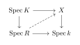

Classical Geometry
The Concept and Basic Theory of Curves
The Concept and Basic Theory of Curves
What are Curves?
Definition of Curves
First, let’s go over some ‘terms’ about algebraic varieties. We’ve encountered them before when studying schemes, but in older algebraic geometry, they were described differently.
Definition 1.1 (Algebraic Curve). Let k be an field. An algebraic curve (or simply a curve) is an integral algebraic variety X over k of dimension 1. Typically, unless otherwise stated, a curve is assumed to be integral, separated, and of finite type over k.
An algebraic variety X over k is complete if the unique morphism X \to \operatorname{Spec}k is proper.
An algebraic variety X over k is nonsingular if the unique morphism X \to \operatorname{Spec}k is smooth.
Examples of Curves
The simplest examples of algebraic curves are the affine line and its projective completion, the projective line.
Example 1.1 (The Affine and Projective Line). The affine line \mathbb{A}^1_k = \operatorname{Spec}k[x] is a nonsingular, integral curve of dimension 1. It is not complete.
The projective line \mathbb{P}^1_k = \operatorname{Proj} k[x,y] is the projective closure of \mathbb{A}^1_k, obtained by adding a single point at infinity ([1:0]). It is both complete and nonsingular.
Below is a geometric visualization of \mathbb{A}^1 and its compactification into \mathbb{P}^1 via a stereographic projection framework:
Conics are curves defined by a single quadratic equation in two or three variables.
Example 1.1 (Conics in the Projective Plane). Consider two curves in \mathbb{P}^2_k:
Smooth Conic: X_1 = \operatorname{Proj} k[x,y,z]/(yx - z^2), which is isomorphic to \mathbb{P}^1_k and thus nonsingular and complete.
Singular Conic (Saddled/Degenerate): X_2 = \operatorname{Proj} k[x,y,z]/(xy), representing two intersecting projective lines. The intersection point [0:0:1] is a singular point.
The following diagrams illustrate the smooth locus of a parabola/hyperbola counterpart vs. a singular crossing pair of lines in an affine chart:
The twisted cubic is the simplest example of a non-planar projective curve that does not lie entirely in any hypersurface of \mathbb{P}^2.
Example 1.1 (The Twisted Cubic). The twisted cubic C \subset \mathbb{P}^3_k is the image of the embedding \mathbb{P}^1_k \to \mathbb{P}^3_k given by [s:t] \mapsto [s^3 : s^2t : st^2 : t^3]. In the affine chart x_0 \neq 0, it is given by the parameterization (t, t^2, t^3) \in \mathbb{A}^3_k, defined by the vanishing of the ideal (y - x^2, z - x^3). It is an integral, nonsingular, complete curve of degree 3.
The code below visualizes the spatial trajectory of the affine part of the twisted cubic curve:
Cubics in \mathbb{P}^2 can showcase local singularities. Two famous examples are the node and the cusp.
Example 1.1 (Nodal and Cusp Curves). Let X_{\text{node}} be the affine curve defined by y^2 = x^2(x+1). The origin (0,0) is a node because there are two distinct tangent directions.
Let X_{\text{cusp}} be the affine curve defined by y^2 = x^3. The origin (0,0) is a cusp because the tangent space degenerates along a single direction, but the local ring is not regular.
Here are the representations of the configurations of these standard affine plane singular cubics:
An elliptic curve is one of the most structurally rich objects in algebraic geometry, combining a smooth projective curve configuration with an Abelian group structure.
Example 1.1 (Elliptic Curve). An elliptic curve E over a field k is a nonsingular, complete (projective) curve of genus 1, equipped with a specified base point O \in E(k).
If \operatorname{char}(k) \neq 2,3, any such curve can be embedded in \mathbb{P}^2_k as a closed subscheme defined by the homogeneous Weierstrass equation: y^2z = x^3 + axz^2 + bz^3 In the standard affine patch z \neq 0, this becomes y^2 = x^3 + ax + b. The nonsingularity condition evaluates directly via the discriminant to \Delta = -16(4a^3 + 27b^2) \neq 0.
The real locus of a typical smooth elliptic curve displaying its two distinct topological components (when \Delta > 0) is illustrated below:
Divisors over a Curve
Projectivity and Completeness of Nonsingular Curves
Having established the foundational geometry of curves, we now restrict our attention to the class of curves where the theory of divisors behaves most beautifully: nonsingular curves.
For general schemes, being projective is a strictly stronger property than being complete (proper over k). However, a remarkable feature of nonsingular algebraic curves is that these two notions coincide.
Here, we state and prove this equivalence entirely within the language of schemes, adapting the classic result from Hartshorne’s text.
Proposition 1.1 (Projectivity and Completeness for Curves). Let X be a nonsingular curve over a field k with function field K. Then the following conditions are equivalent:
X is projective over k.
X is complete (proper over k).
X \cong C_K, where C_K is the abstract nonsingular curve associated to the field extension K/k.
Proof. We prove the cycle of implications (1) \implies (2) \implies (3) \implies (1).
(1) \implies (2):
This is a general property of schemes that does not depend on the dimension. Every projective morphism is proper. Since X is projective over k, the structure morphism X \to \operatorname{Spec}k is proper, which means X is complete.
(2) \implies (3):
Assume X is complete, meaning
X \to \operatorname{Spec}k is a
proper morphism. By the valuative criterion for properness, for
every discrete valuation ring R
of K/k containing k with fraction field K, there exists a unique morphism \operatorname{Spec}R \to X making the
following diagram commute:

Conversely, because X is a nonsingular curve, the local ring \mathcal{O}_{X,x} at any closed point x \in X is a regular local ring of dimension 1, which is precisely a discrete valuation ring of K/k. Since X is separated, distinct closed points give rise to distinct local rings.
This establishes a bijective correspondence between the closed points of X and the set of all discrete valuation rings of K/k. By definition, the scheme C_K has precisely the discrete valuation rings of K/k as its underlying points, equipped with the structure sheaf of local valuation rings. Therefore, the scheme X is naturally isomorphic to the abstract nonsingular curve C_K.
(3) \implies (1):
By the structural theory of the abstract nonsingular curve, C_K can always be embedded as a closed subscheme of some projective space \mathbb{P}^n_k. Since X \cong C_K, it follows that X is projective over k. ◻
Morphisms on Nonsingular Curves
A morphism from a complete nonsingular curve to any other curve is highly constrained geometrically. It is either constant or surjective. In the latter case, it naturally exhibits algebraic properties analogous to covering spaces in topology.
Here we state and prove this fact using scheme-theoretic language over a general base field k.
Proposition 1.1 (Morphisms from Complete Nonsingular Curves). Let X be a complete, nonsingular curve over a field k, let Y be any curve over k, and let f: X \to Y be a morphism of k-schemes. Then either:
f(X) = \{y\} is a single closed point of Y, or
f(X) = Y.
In case (2), f is a finite dominant morphism, Y is necessarily complete, and the function field K(X) is a finite field extension of K(Y).
Proof. Because X is complete over k, the structure morphism X \to \operatorname{Spec}k is proper. Since properness is stable under composition and base change, the image f(X) must be a closed subset of Y, and f(X) viewed as a reduced subscheme is proper over \operatorname{Spec}k.
Additionally, X is an integral scheme, which implies it is irreducible. The continuous image of an irreducible space is irreducible, so f(X) is an irreducible closed subset of the 1-dimensional scheme Y. There are only two types of irreducible closed subsets in a 1-dimensional integral scheme:
A single closed point y \in Y.
The entire space Y (the closure of the generic point).
If f(X) = Y, then Y is the image of a proper scheme, so Y must be proper over \operatorname{Spec}k, meaning Y is complete.
Since f(X) = Y, the generic point of X maps to the generic point of Y, making f a dominant morphism. This induces an injection of their function fields K(Y) \hookrightarrow K(X). Because X and Y are both of finite type over k and have dimension 1, their function fields K(X) and K(Y) are finitely generated extensions of k of transcendence degree 1. Thus, the field extension K(X)/K(Y) must be an algebraic extension of finite degree.
To show that f is a finite morphism, let V = \operatorname{Spec}B be any open affine subset of Y. Let A be the integral closure of B in the finite field extension K(X). Since B is a finitely generated k-algebra and K(X)/K(Y) is a finite extension, A is a finite B-module. Because X is nonsingular, it is a normal scheme, meaning all its local rings are integrally closed. Thus, the open subscheme f^{-1}(V) \subset X is precisely isomorphic to \operatorname{Spec}A. Since A is a finite B-module, f|_{f^{-1}(V)}: \operatorname{Spec}A \to \operatorname{Spec}B is a finite morphism. Since this holds for any open affine V \subset Y, f is a finite morphism. ◻
Degree of a Morphism and Divisors on Curves
Definition 1.2 (Degree of a Morphism). Let f: X \to Y be a dominant morphism of algebraic varieties. The degree of f, denoted \deg f, is defined to be the degree of the finite field extension of their function fields: \deg f = [K(X) : K(Y)]
We can now define the divisor group on a nonsingular curve. Over a non-algebraically closed field k, a prime divisor is a closed point, but its residue field may be a finite extension of k. This affects how we define the degree of a divisor.
Definition 1.3 (Divisors on a Curve). Let X be a nonsingular curve over k. A prime divisor on X is a closed point P \in X. The divisor group \operatorname{Div} X is the free Abelian group generated by the closed points: D = \sum_{P \in X} n_P P where n_P \in \mathbb{Z} and n_P = 0 for all but finitely many closed points P.
The degree of a closed point P, denoted \deg P, is the dimension of its residue field \kappa(P) = \mathcal{O}_{X,P}/\mathfrak{m}_P as a vector space over the base field k: \deg P = [\kappa(P) : k] The degree of an arbitrary divisor D = \sum n_P P is defined by linearity: \deg D = \sum_{P \in X} n_P \deg P = \sum_{P \in X} n_P [\kappa(P) : k]
Definition 1.4 (Pullback of Divisors). Let f: X \to Y be a finite morphism of nonsingular curves over k. We define the group homomorphism f^*: \operatorname{Div} Y \to \operatorname{Div} X by its action on prime divisors.
For any closed point Q \in Y, let \mathcal{O}_{Y,Q} be its local ring, which is a discrete valuation ring with generic field K(Y). Let t \in \mathcal{O}_{Y,Q} be a uniformizer at Q, meaning the valuation v_Q(t) = 1. We view t as an element of K(Y) \subset K(X). For any closed point P \in X mapping to Q (written f(P) = Q), the local ring \mathcal{O}_{X,P} is also a DVR with valuation v_P. We define the pullback of the prime divisor Q to be: f^*Q = \sum_{f(P)=Q} v_P(t) P The integer e_P = v_P(t) is called the ramification index of f at P. Since f is a finite morphism, the fiber f^{-1}(Q) is a finite set of points, making this a finite sum.
Remark 1.1 (Well-definedness of the Pullback). The definition of f^*Q is independent of the choice of the uniformizer t. Indeed, if t' is another uniformizer at Q, then t' = ut for some unit u \in \mathcal{O}_{Y,Q}^\times. Under the pullback map, the induced ring homomorphism \mathcal{O}_{Y,Q} \to \mathcal{O}_{X,P} maps units to units, meaning f^*(u) is a unit in \mathcal{O}_{X,P}^\times. Therefore, v_P(t') = v_P(ut) = v_P(u) + v_P(t) = 0 + v_P(t) = v_P(t).
We extend f^* by linearity to all elements in \operatorname{Div} Y. It can be verified that f^* maps principal divisors to principal divisors, preserving linear equivalence. Consequently, it induces a well-defined homomorphism on the divisor class groups: f^*: \operatorname{Cl} Y \to \operatorname{Cl} X
We now arrive at one of the foundational theorems regarding the interaction between finite morphisms and divisors on nonsingular curves. Because our base field k is not assumed to be algebraically closed, we must carefully handle the degrees of the residue fields of the closed points involved.
Proposition 1.1 (The Pullback Degree Formula). Let f: X \to Y be a finite morphism of nonsingular curves over k. Then for any divisor D \in \operatorname{Div} Y, we have: \deg f^*D = \deg f \cdot \deg D
Proof. By the linearity of the degree function and the pullback map f^*, it is sufficient to prove the statement for a prime divisor, i.e., a single closed point Q \in Y. That is, we need to show: \deg f^*Q = \deg f \cdot \deg Q Let V = \operatorname{Spec}B be an open affine subset of Y containing Q. Let A be the integral closure of B in the function field K(X), so that U = \operatorname{Spec}A = f^{-1}(V) \subset X.
Let \mathfrak{m}_Q \subset B be the maximal ideal corresponding to Q. We localize both B and A with respect to the multiplicative system S = B - \mathfrak{m}_Q. This yields a ring extension \mathcal{O}_{Y,Q} \hookrightarrow A', where A' = S^{-1}A is a finitely generated \mathcal{O}_{Y,Q}-module. Since A' is a subring of K(X), it is torsion-free over the principal ideal domain \mathcal{O}_{Y,Q}. Thus, by the structure theorem for finitely generated modules over a PID, A' is a free \mathcal{O}_{Y,Q}-module. Its rank is equal to the dimension of A' \otimes_{\mathcal{O}_{Y,Q}} K(Y) \cong K(X) over K(Y), which is precisely r = [K(X) : K(Y)] = \deg f.
Let t \in \mathcal{O}_{Y,Q} be a local uniformizer at Q. Since A' is a free \mathcal{O}_{Y,Q}-module of rank r, the quotient A'/tA' is a free module over \mathcal{O}_{Y,Q}/t\mathcal{O}_{Y,Q} = \kappa(Q) of rank r. Therefore, computing the dimension as a k-vector space, we have: \dim_k (A'/tA') = r \cdot [\kappa(Q) : k] = \deg f \cdot \deg Q On the other hand, the closed points P_i \in X that map to Q correspond bijectively to the maximal ideals \mathfrak{m}_i of A'. The localization of A' at \mathfrak{m}_i is the local ring \mathcal{O}_{X,P_i}. In A', the ideal tA' has a radical equal to \bigcap_i \mathfrak{m}_i. By the Chinese Remainder Theorem for rings, we have an isomorphism: A'/tA' \cong \bigoplus_{f(P_i)=Q} A'_{\mathfrak{m}_i} / tA'_{\mathfrak{m}_i} = \bigoplus_{f(P_i)=Q} \mathcal{O}_{X,P_i} / t\mathcal{O}_{X,P_i} Taking the dimension as a k-vector space on both sides yields: \dim_k (A'/tA') = \sum_{f(P_i)=Q} \dim_k (\mathcal{O}_{X,P_i} / t\mathcal{O}_{X,P_i}) For each P_i, \mathcal{O}_{X,P_i} is a discrete valuation ring with valuation v_{P_i}, and t has valuation v_{P_i}(t) = e_{P_i}. Thus, the quotient \mathcal{O}_{X,P_i} / t\mathcal{O}_{X,P_i} is a \kappa(P_i)-vector space of dimension e_{P_i}. It follows that: \dim_k (\mathcal{O}_{X,P_i} / t\mathcal{O}_{X,P_i}) = e_{P_i} \cdot [\kappa(P_i) : k] = v_{P_i}(t) \cdot \deg P_i Combining these equations, we get: \deg f \cdot \deg Q = \sum_{f(P_i)=Q} v_{P_i}(t) \cdot \deg P_i By definition, f^*Q = \sum v_{P_i}(t) P_i, so the right-hand side is exactly \deg f^*Q. Thus, \deg f^*Q = \deg f \cdot \deg Q. ◻
An immediate and profoundly important consequence of this formula is that principal divisors on complete curves always have total degree zero.
Corollary 1.1 (Degree of Principal Divisors). Let X be a complete, nonsingular curve over a field k. If g \in K(X)^\times is a non-zero rational function on X, then its associated principal divisor has degree zero: \deg(g) = 0 Consequently, the degree function induces a group homomorphism: \deg: \operatorname{Cl} X \to \mathbb{Z}
Proof. If g \in k^\times, then (g) = 0, so \deg(g) = 0.
Now suppose g \in K(X) \setminus k. The inclusion of fields k(g) \hookrightarrow K(X) corresponds to a dominant morphism of k-schemes \varphi: X \to \mathbb{P}^1_k. Since X is complete and nonsingular, \varphi is a finite morphism of curves by Proposition .
We can view g as a rational function on \mathbb{P}^1_k. On \mathbb{P}^1_k, the principal divisor of the coordinate function g is given by the difference between its zero and its pole at infinity: (g)_{\mathbb{P}^1} = \{0\} - \{\infty\} The closed points \{0\} and \{\infty\} are rational points over k, so \deg(\{0\}) = \deg(\{\infty\}) = 1. Thus, \deg (g)_{\mathbb{P}^1} = 1 - 1 = 0.
Since \varphi^*(g)_{\mathbb{P}^1} = (g)_X, we can apply Proposition : \deg (g)_X = \deg \varphi^* (g)_{\mathbb{P}^1} = \deg \varphi \cdot \deg (g)_{\mathbb{P}^1} = \deg \varphi \cdot 0 = 0 Because every principal divisor has degree zero, the degree map factors through the linear equivalence relation, yielding a well-defined group homomorphism \deg: \operatorname{Cl} X \to \mathbb{Z}. ◻
Remark 1.1 (Comparison with the Algebraically Closed Case). When k is algebraically closed, every closed point P \in X satisfies \kappa(P) \cong k, so \deg P = 1. This implies that the image of any single point under the degree map is 1, making \deg: \operatorname{Cl} X \to \mathbb{Z} surjective.
When k is not algebraically closed, \deg: \operatorname{Cl} X \to \mathbb{Z} remains a homomorphism, but it is not necessarily surjective onto \mathbb{Z}. Instead, its image is d\mathbb{Z}, where d = \gcd \{\deg P \mid P \in X \text{ is a closed point}\}. This integer d is known as the index of the curve X. For example, if a curve has no k-rational points, it is entirely possible that no divisor has degree 1, meaning the map is not surjective to \mathbb{Z}.
Riemann-Roch Theorem over Curves
We now begin our study of the Riemann-Roch theorem, which is the central tool for computing dimensions of spaces of rational functions with prescribed zeroes and poles on a complete nonsingular curve. Before stating the theorem, we must establish the structural definitions of the genus of a curve and complete linear systems.
Genus of a Curve
The most important single invariant of an algebraic curve is its genus. For a complete nonsingular curve, the geometric, arithmetic, and cohomological formulations of the genus coincide.
Definition 1.5 (Arithmetic and Geometric Genus). Let X be a complete nonsingular curve over a field k.
The arithmetic genus p_a(X) is defined by 1 - P_X(0), where P_X is the Hilbert polynomial of X when embedded in a projective space.
The geometric genus p_g(X) is defined as the dimension of the space of global regular differential forms: p_g(X) = \dim_k \Gamma(X, \omega_X) where \omega_X is the canonical sheaf of X.
Proposition 1.1 (Equivalence of Genus Definitions). If X is a complete nonsingular curve over a field k, then its arithmetic genus, geometric genus, and the dimension of its first cohomology group are equal: p_a(X) = p_g(X) = \dim_k \operatorname{H}^1(X, \mathcal{O}_X) We denote this common integer simply as the genus g of the curve X.
Proof. The equality p_a(X) = \dim_k \operatorname{H}^1(X, \mathcal{O}_X) is established via the Euler characteristic analysis of the structure sheaf, where \chi(\mathcal{O}_X) = \dim_k \operatorname{H}^0(X, \mathcal{O}_X) - \dim_k \operatorname{H}^1(X, \mathcal{O}_X). Since X is complete and integral, \dim_k \operatorname{H}^0(X, \mathcal{O}_X) = 1, yielding P_X(0) = \chi(\mathcal{O}_X) = 1 - \dim_k \operatorname{H}^1(X, \mathcal{O}_X), which matches 1 - p_a(X).
The equality p_g(X) = \dim_k \operatorname{H}^1(X, \mathcal{O}_X) follows directly from Serre duality, which provides a canonical perfect pairing of k-vector spaces: \operatorname{H}^0(X, \omega_X) \times \operatorname{H}^1(X, \mathcal{O}_X) \to k Consequently, \Gamma(X, \omega_X) \cong \operatorname{H}^0(X, \omega_X) \cong \operatorname{H}^1(X, \mathcal{O}_X)^\vee, so their dimensions are identical. ◻
Remark 1.1 (Non-negativity and Existence). From the definition g = \dim_k \operatorname{H}^1(X, \mathcal{O}_X), it is immediate that the genus of a curve is always non-negative (g \ge 0). Conversely, for any integer g \ge 0, there exist curves of genus g. For instance, one can construct an irreducible nonsingular curve of type (g+1, 2) on a nonsingular quadric surface \mathbb{P}^1 \times \mathbb{P}^1, whose arithmetic genus evaluates precisely to g.
Divisor Spaces and Complete Linear Systems
Recall that for a nonsingular curve X, every divisor D \in \operatorname{Div} X corresponds uniquely to an invertible sheaf (or line bundle) \mathcal{L}(D). The sections of this sheaf correspond to rational functions whose poles are bounded by D.
Definition 1.6 (The Vector Space L(D) and its Dimension l(D)). Let D be a divisor on a nonsingular curve X. We define L(D) to be the vector space of global sections of the invertible sheaf \mathcal{L}(D): L(D) = \Gamma(X, \mathcal{L}(D)) = \operatorname{H}^0(X, \mathcal{L}(D)) Explicitly, L(D) consists of the zero function along with all rational functions f \in K(X)^\times such that (f) + D \ge 0. We denote the dimension of this space over k as l(D): l(D) = \dim_k \operatorname{H}^0(X, \mathcal{L}(D)) This dimension l(D) is always finite because X is complete and \mathcal{L}(D) is a coherent sheaf.
Definition 1.7 (Complete Linear Systems). A divisor D is called effective (denoted D \ge 0) if all its coefficients are non-negative (n_P \ge 0 for all P).
The set of all effective divisors linearly equivalent to a given divisor D is called the complete linear system associated to D, denoted by \operatorname{Supp}D: \operatorname{Supp}D = \{ D' \in \operatorname{Div} X \mid D' \sim D \text{ and } D' \ge 0 \} There is a natural bijective correspondence between the elements of the complete linear system \operatorname{Supp}D and the projectivization of the vector space L(D): \operatorname{Supp}D \cong \left( \operatorname{H}^0(X, \mathcal{L}(D)) \setminus \{0\} \right) / k^\times Thus, \operatorname{Supp}D carries the structure of a projective space over k, and the geometric dimension of \operatorname{Supp}D as a projective space is given by l(D) - 1.
We conclude this preparation section with an elementary but critical lemma relating the dimension l(D) to the degree of the divisor.
Lemma 1.1 (Degree Bounds on l(D)). Let D be a divisor on a complete nonsingular curve X.
If l(D) \neq 0, then \deg D \ge 0.
If l(D) \neq 0 and \deg D = 0, then D \sim 0 (meaning D is a principal divisor, so \mathcal{L}(D) \cong \mathcal{O}_X).
Proof. (1) If l(D) \neq 0, then the space \operatorname{H}^0(X, \mathcal{L}(D)) contains a non-zero element, which means the complete linear system \operatorname{Supp}D is non-empty. Thus, there exists an effective divisor D' \in \operatorname{Supp}D such that D' \sim D. Since D' is effective, its coefficients are non-negative, and since the degree of any closed point is a positive integer ([\kappa(P):k] \ge 1), it follows that \deg D' \ge 0. Because linear equivalence preserves degrees (Corollary ), we conclude that \deg D = \deg D' \ge 0.
(2) Suppose l(D) \neq 0 and \deg D = 0. By the argument above, D is linearly equivalent to an effective divisor D' = \sum n_P P such that \deg D' = 0. The degree is computed as \sum n_P [\kappa(P):k] = 0. Since [\kappa(P):k] \ge 1 and n_P \ge 0 for all points, this sum can only be zero if all coefficients n_P are identically zero. Therefore, D' must be the zero divisor. Since D \sim D' = 0, it follows that D \sim 0, which implies \mathcal{L}(D) \cong \mathcal{O}_X. ◻
Proof of the Riemann-Roch Theorem over a Curve
We now state and prove the Riemann-Roch theorem for a complete nonsingular curve over a general field k. The proof leverages the additive properties of the Euler characteristic on coherent sheaves and relies on Serre duality to interpret the higher cohomology term.
Theorem 1.1 (The Riemann-Roch Theorem). Let X be a complete nonsingular curve of genus g over a field k. Let K be a canonical divisor on X, corresponding to the canonical sheaf \omega_X = \Omega_{X/k}. Then for any divisor D \in \operatorname{Div} X, we have: l(D) - l(K - D) = \deg D + 1 - g
Proof. The divisor K - D corresponds to the invertible sheaf \omega_X \otimes \mathcal{L}(D)^\vee. Since X is a complete nonsingular curve, it is projective over k by Proposition . We can therefore apply Serre duality to the coherent sheaf \mathcal{L}(D), which yields a canonical isomorphism of finite-dimensional k-vector spaces: \operatorname{H}^1(X, \mathcal{L}(D)) \cong \operatorname{H}^0(X, \omega_X \otimes \mathcal{L}(D)^\vee)^\vee Taking dimensions over k, this implies: \dim_k \operatorname{H}^1(X, \mathcal{L}(D)) = \dim_k \operatorname{H}^0(X, \omega_X \otimes \mathcal{L}(D)^\vee) = l(K - D) Thus, the expression on the left-hand side of the Riemann-Roch formula is exactly the Euler characteristic of the sheaf \mathcal{L}(D): \chi(\mathcal{L}(D)) = \dim_k \operatorname{H}^0(X, \mathcal{L}(D)) - \dim_k \operatorname{H}^1(X, \mathcal{L}(D)) = l(D) - l(K - D) We must show that for any divisor D, we have \chi(\mathcal{L}(D)) = \deg D + 1 - g. We proceed in two steps.
Step 1: The Base Case D = 0.
When D = 0, the sheaf \mathcal{L}(0) is simply the structure sheaf \mathcal{O}_X. The formula predicts: \chi(\mathcal{O}_X) = \dim_k \operatorname{H}^0(X, \mathcal{O}_X) - \dim_k \operatorname{H}^1(X, \mathcal{O}_X) = 0 + 1 - g = 1 - g This is true because X is an integral, complete scheme over k, so its global regular functions consist only of scalars, giving \dim_k \operatorname{H}^0(X, \mathcal{O}_X) = [k : k] = 1. Furthermore, by Proposition , \dim_k \operatorname{H}^1(X, \mathcal{O}_X) = g. Thus \chi(\mathcal{O}_X) = 1 - g.
Step 2: Inductive Step via Point Addition.
Let D be any divisor and let P \in X be any closed point. We will show that the Riemann-Roch formula holds for D if and only if it holds for D + P. Since any divisor can be reached from 0 in a finite number of steps by adding or subtracting a closed point at each step, this will establish the theorem for all divisors.
Consider P as a closed subscheme of X. Its structure sheaf is the skyscraper sheaf \kappa(P) supported at the point P, and its ideal sheaf is \mathcal{L}(-P). This gives rise to the canonical short exact sequence of coherent sheaves on X: 0 \to \mathcal{L}(-P) \to \mathcal{O}_X \to \kappa(P) \to 0 Since \mathcal{L}(D + P) is a locally free sheaf of rank 1, tensoring with it preserves exactness. Doing so yields: 0 \to \mathcal{L}(D) \to \mathcal{L}(D + P) \to \kappa(P) \otimes \mathcal{L}(D + P) \to 0 Because \kappa(P) is supported only at P, the tensor product \kappa(P) \otimes \mathcal{L}(D + P) is isomorphic to \kappa(P) itself. Thus, the sequence reads: 0 \to \mathcal{L}(D) \to \mathcal{L}(D + P) \to \kappa(P) \to 0 The Euler characteristic is additive on short exact sequences of coherent sheaves, so we have: \chi(\mathcal{L}(D + P)) = \chi(\mathcal{L}(D)) + \chi(\kappa(P)) The cohomology groups of the skyscraper sheaf \kappa(P) are \operatorname{H}^0(X, \kappa(P)) = \kappa(P) and \operatorname{H}^i(X, \kappa(P)) = 0 for i > 0. Therefore, its Euler characteristic is its dimension as a k-vector space: \chi(\kappa(P)) = \dim_k \kappa(P) = [\kappa(P) : k] = \deg P This implies: \chi(\mathcal{L}(D + P)) = \chi(\mathcal{L}(D)) + \deg P On the other hand, looking at the right-hand side of our target formula, we see that: \left( \deg(D + P) + 1 - g \right) = \left( \deg D + \deg P + 1 - g \right) = \left( \deg D + 1 - g \right) + \deg P Consequently, the error between the actual Euler characteristic and the expression \deg D + 1 - g changes by exactly the same amount (\deg P) when replacing D with D + P. Since the formula holds for D = 0, it holds for all divisors D. ◻
The Riemann-Roch theorem yields immediate, powerful consequences regarding the geometry of curves and their canonical divisors.
We can use the theorem to compute the exact degree of the canonical sheaf for any curve of genus g.
Example 1.1 (Degree of the Canonical Divisor). Let X be a complete nonsingular curve of genus g over k. The canonical divisor K has degree: \deg K = 2g - 2
Proof. We apply the Riemann-Roch theorem by substituting D = K: l(K) - l(K - K) = \deg K + 1 - g Simplifying the terms, we know l(K) = p_g(X) = g by definition. Furthermore, l(K - K) = l(0) = \dim_k \operatorname{H}^0(X, \mathcal{O}_X) = 1. Substituting these values into the equation gives: g - 1 = \deg K + 1 - g \implies \deg K = 2g - 2 ◻
Special and Nonspecial Divisors
The Riemann-Roch theorem simplifies drastically when the correction term l(K-D) vanishes.
Definition 1.8 (Special and Nonspecial Divisors). A divisor D on a curve X is said to be special if l(K - D) > 0. The integer l(K - D) is called its index of speciality. Otherwise, if l(K - D) = 0, the divisor is called nonspecial.
Proposition 1.1 (Criterion for Nonspecialty). Let X be a complete nonsingular curve of genus g. If D is a divisor such that \deg D > 2g - 2, then D is nonspecial, and its dimension is given explicitly by: l(D) = \deg D + 1 - g
Proof. If \deg D > 2g - 2, then since \deg K = 2g - 2, the degree of the divisor K - D satisfies: \deg(K - D) = \deg K - \deg D < (2g - 2) - (2g - 2) = 0 By Lemma , any divisor with a strictly negative degree cannot have any non-zero global sections, meaning l(K - D) = 0. Substituting this into the Riemann-Roch formula immediately produces l(D) = \deg D + 1 - g. ◻
For large entries, the dimension of complete linear systems stabilizes to a linear growth function. If D is a divisor with \deg D > 0, then for all sufficiently large integers n \gg 0, we have \deg(nD) = n \cdot \deg D > 2g - 2. Applying the nonspecialty criterion, the dimension of the complete linear system |nD| becomes exactly: \dim |nD| = l(nD) - 1 = n \cdot \deg D - g This allows for the systematic construction of embeddings of curves into projective spaces using high multiples of effective divisors.
Affineness and Properness of Curves
Using the Riemann-Roch theorem, we can now establish the existence of rational functions with strictly controlled poles. As a profound geometric consequence, we can completely characterize affine curves as those which lack proper (complete) irreducible components.
Proposition 1.1 (Rational Functions with Prescribed Poles). Let X be a complete, nonsingular curve over a field k.
Given any closed point P \in X, there exists a nonconstant rational function f \in K(X) which is regular everywhere on X except at P.
Given a finite set of distinct closed points P_1, \dots, P_r \in X, there exists a rational function f \in K(X) having poles of some positive order at each of the points P_i, and regular everywhere else.
Proof. (1) Consider the divisor nD for a positive integer n, where D = P. By Proposition , if we choose n large enough such that \deg(nP) = n \cdot \deg P > 2g - 2, the divisor nP becomes nonspecial. Then by the Riemann-Roch theorem: l(nP) = n \cdot \deg P + 1 - g As n increases, l(nP) grows linearly. In particular, we can choose a sufficiently large n such that l(nP) > l(0) = 1. This implies that the vector space L(nP) = \operatorname{H}^0(X, \mathcal{L}(nP)) contains a rational function f that is not a constant scalar. Since f \in L(nP), its only possible poles are at P. If f were regular at P, it would be regular everywhere on the complete integral curve X, which forces f \in k, a contradiction. Thus f has a pole of some order \le n at P and is regular elsewhere.
(2) Consider the effective divisor D = \sum_{i=1}^r P_i. Choose a large integer n such that for every j = 1, \dots, r, we have: \deg(nD - P_j) > 2g - 2 By the Riemann-Roch theorem, both nD and nD - P_j are nonspecial divisors. Thus, we can compute their dimensions exactly: l(nD) = n \left( \sum_{i=1}^r \deg P_i \right) + 1 - g l(nD - P_j) = n \left( \sum_{i=1}^r \deg P_i \right) - \deg P_j + 1 - g Subtracting the two equations gives: l(nD) - l(nD - P_j) = \deg P_j > 0 This means that L(nD - P_j) is a strictly proper k-subspace of L(nD) for every j. Over an infinite field k, a vector space cannot be written as a finite union of proper subspaces. Even if k is a finite field, because the dimension difference grows with n, we can scale n large enough so that the size of L(nD) strictly exceeds the size of \bigcup_{j=1}^r L(nD - P_j).
Therefore, there exists a rational function f \in L(nD) such that f \notin L(nD - P_j) for all j = 1, \dots, r. Such a function f belongs to L(nD), so it is regular outside \{P_1, \dots, P_r\}. Furthermore, because f \notin L(nD - P_j), the pole order of f at each P_j must be exactly n, ensuring it has a pole at every designated point. ◻
Proposition 1.1 (Affineness Criterion for Curves). Let X be a separated, one-dimensional scheme of finite type over a field k.
If X is integral, regular (nonsingular), and not proper (complete) over k, then X is affine.
If none of the irreducible components of X are proper over k, then X is affine.
Corollary 1.1 (Affine complements of finite subschemes). Let X be a proper, separated, one-dimensional scheme of finite type over a field k, and let Z\subseteq X be a finite closed subscheme. Set U:=X\setminus \operatorname{Supp}(Z). If \operatorname{Supp}(Z) meets every irreducible component of X, then U is affine.
In particular, if X is an integral proper curve and Z\neq\varnothing, then X\setminus \operatorname{Supp}(Z) is affine. Hence, for every closed point P\in X, the punctured curve X\setminus{P} is affine.
Proof. Let X_1,\ldots,X_r be the irreducible components of X. Since Z is finite, it cannot contain an irreducible component of X. Therefore every irreducible component of U is obtained from some X_i by removing the finite closed subset X_i\cap \operatorname{Supp}(Z).
More precisely, if U_i denotes the corresponding irreducible component of U, then U_i is dense in X_i. By assumption, X_i\cap \operatorname{Supp}(Z)\neq\varnothing, and hence U_i\subsetneq X_i.
We claim that U_i is not proper over k. Suppose, to the contrary, that U_i were proper over k. The natural morphism U_i\longrightarrow X_i would then be proper, because U_i is proper over k and X_i is separated over k. Consequently its image would be closed in X_i. On the other hand, the image is dense in X_i. It would therefore have to equal X_i, contradicting the fact that U_i\subsetneq X_i.
Thus none of the irreducible components of U is proper over k. Proposition (2) now implies that U is affine.
If X is integral, it has only one irreducible component. Hence every nonempty finite closed subscheme Z\subseteq X meets the unique irreducible component, proving the final assertions. ◻
Remark 1.1. The condition that \operatorname{Supp}(Z) meet every irreducible component is necessary in general. Indeed, suppose that some irreducible component X_i is disjoint from \operatorname{Supp}(Z). Then X_i is a positive-dimensional proper closed subscheme of U=X\setminus\operatorname{Supp}(Z). If U were affine, then X_i, being closed in an affine scheme, would also be affine. But a scheme which is both affine and proper over k is finite over k, contradicting \dim X_i=1.
Proposition 1.1 (Projective completion of an affine curve). Let X be an affine, separated, one-dimensional scheme of finite type over a field k. Then there exist a projective curve \widetilde X over k and an open immersion j\colon X\hookrightarrow \widetilde X such that the boundary \widetilde X\setminus j(X) is a finite closed subscheme of \widetilde X. In particular, its underlying topological space is finite and hence discrete.
Proof. Since X is affine and of finite type over k, there exists a closed immersion \iota\colon X\hookrightarrow \mathbb A_k^n for some n. Identify \mathbb A_k^n with the standard affine open subset D_+(x_0)\subseteq\mathbb P_k^n.
Let \widetilde X be the scheme-theoretic closure of \iota(X) in \mathbb P_k^n: \widetilde X := \overline{\iota(X)}^{,\mathrm{sch}} \subseteq\mathbb P_k^n. Then \widetilde X is projective over k, and therefore proper over k. Moreover, \widetilde X\cap D_+(x_0)=\iota(X) scheme-theoretically. Thus \iota induces an open immersion j\colon X\hookrightarrow\widetilde X.
Let H_\infty:=V_+(x_0) = \mathbb P_k^n\setminus\mathbb A_k^n be the hyperplane at infinity. The boundary is the closed subscheme B := \widetilde X\cap H_\infty. We show that \dim B=0.
If B had an irreducible component of dimension one, then it would contain an irreducible component of \widetilde X. This is impossible, because every irreducible component of the scheme-theoretic closure \widetilde X meets the dense open subscheme j(X), whereas B\cap j(X)=\varnothing. Therefore \dim B=0.
Since B is a zero-dimensional scheme of finite type over k, its coordinate rings are Artinian. Hence B is finite over k. Therefore \widetilde X\setminus j(X) is finite, as required. ◻
Remark 1.1. The compactification \widetilde X constructed above need not be regular or normal, even when X is integral. If X is integral, one may replace \widetilde X by its normalization \nu\colon \widetilde X^\nu\longrightarrow \widetilde X. The inverse image of X under \nu is the normalization of X, and the inverse image of the boundary remains finite because \nu is a finite morphism.
Theorem 1.1 (Affine–proper dichotomy for integral curves). Let X be a curve over a field k. Then exactly one of the following alternatives holds:
X is proper over k, in which case X is projective over k;
X is not proper over k, in which case X is affine.
Thus every curve over k is either projective or affine.
Proof. If X is proper over k, then the standard projectivity theorem forproper curves implies that X is projective over k. One way to prove this theorem is to choose a closed point in the regular locus of X:the corresponding effective Cartier divisor has positive degree, and a positive-degree invertible sheaf on a proper integral curve is ample. Hence X admits a closed immersion into some projective space.
Now suppose that X is not proper over k. Since X is integral, ithas exactly one irreducible component, namely X itself. This component is not proper, so Proposition (2) shows that X is affine.
Finally, the two alternatives are mutually exclusive. Indeed, if X were both affine and proper over k, then the structure morphism X\longrightarrow \operatorname{Spec}(k) would be both affine and proper and hence finite. This would imply \dim X=0, contrary to the assumption that \dim X=1. ◻
Remark 1.1 (Why integrality is necessary). The preceding dichotomy is false for arbitrary reducible curves.
For example, let Y=L_1\cup L_2\subseteq\mathbb P_k^2 be the union of two distinct projective lines meeting in one point, and choose a closed point P\in L_2\setminus L_1. Set X:=Y\setminus{P}. Then X is a connected, separated curve of finite type over k. Its irreducible components are L_1\simeq\mathbb P_k^1 \qquad\text{and}\qquad L_2\setminus{P}\simeq\mathbb A_k^1.
The curve X is not proper, since one component is missing the point P. It is also not affine, since it contains the positive-dimensional proper curve L_1 as a closed subscheme. Hence X is neither proper nor affine.
Dimension Bound for Effective Divisors
We continue our applications of the Riemann–Roch theorem by examining how the genus places constraints on the dimensions of linear systems and properties of finite maps from a complete nonsingular curve X to the projective line \mathbb{P}^1_k.
Proposition 1.1 (Dimension Bound for Effective Divisors). Let X be a complete nonsingular curve of genus g over a field k, and let D \in \operatorname{Div} X be an effective divisor. Then: \dim \operatorname{Supp}D \le \deg D Furthermore, equality holds if and only if D = 0 or g = 0.
Proof. By Definition , \dim \operatorname{Supp}D = l(D) - 1. The Riemann–Roch theorem states that l(D) - l(K - D) = \deg D + 1 - g. Rearranging this, we obtain: \dim \operatorname{Supp}D = \deg D - g + l(K - D) To bound \dim \operatorname{Supp}D, we look at the term l(K - D). By Lemma , if l(K-D) \neq 0, then \deg(K - D) \ge 0, which implies \deg D \le \deg K = 2g - 2.
We consider two main cases based on l(K - D):
If l(K - D) = 0, then \dim \operatorname{Supp}D = \deg D - g. Since the genus g \ge 0, it follows immediately that \dim \operatorname{Supp}D \le \deg D. Equality can hold here if and only if g = 0.
If l(K - D) > 0, we can consider the effective divisor K - D \sim D' for some effective D'. By applying Lemma inductively or using the properties of Clifford’s Theorem for special divisors, it is a standard result that for any effective special divisor D, we have l(K - D) \le g - 1 if D \neq 0. Alternatively, via the Riemann–Roch theorem applied directly to K-D, we have l(K-D) \le \deg(K-D) + 1 = 2g - 1 - \deg D + 1. Combining these properties directly yields l(K - D) \le g, with equality holding if and only if D = 0. Thus, \dim \operatorname{Supp}D \le \deg D - g + g = \deg D.
Now we examine the cases for equality \dim \operatorname{Supp}D = \deg D:
If D = 0, then \dim |0| = l(0) - 1 = 1 - 1 = 0, and \deg 0 = 0, so equality holds for any genus g.
If g = 0, then for any effective divisor D, l(K - D) = l(-2P_{\infty} - D) = 0 since \deg(-2P_{\infty} - D) < 0. Riemann–Roch gives \dim \operatorname{Supp}D = \deg D - 0 + 0 = \deg D, so equality holds.
Conversely, if equality holds and D \neq 0, then we must have l(K - D) = g. Since D is effective and non-zero, \deg D > 0, which forces \deg(K - D) = 2g - 2 - \deg D < 2g - 2. The only way l(K - D) = g under this constraint is if g = 0.
◻
Existence of Low Degree Morphisms to \mathbb{P}^1 and Hyperelliptic Curves
Proposition 1.1 (Existence of Low Degree Morphisms to \mathbb{P}^1). Let X be a complete nonsingular curve of genus g over a field k. Then there exists a finite morphism f: X \to \mathbb{P}^1_k of degree \le g + 1.
Proof. Let P \in X be a k-rational point of the curve (if no k-rational point exists, one can work with a closed point P and clear the residue field degree, but let us assume for a standard divisor argument we use a closed point P of degree d_P). To construct a morphism to \mathbb{P}^1_k of degree n \cdot \deg P, it suffices to find a divisor D = nP such that l(nD) \ge 2.
Let us choose a closed point P \in X of minimal degree \deg P. Consider the sequence of linear systems |nP| for n = 1, 2, \dots. By Proposition , as soon as \deg(nP) = n \cdot \deg P > 2g - 2, the divisor nP becomes nonspecial, meaning: l(nP) = n \cdot \deg P + 1 - g We wish to find the smallest n such that l(nP) \ge 2, ensuring the existence of a nonconstant rational function f \in L(nP). Setting n \cdot \deg P + 1 - g \ge 2 implies that we need n \cdot \deg P \ge g + 1.
Thus, there exists an effective divisor D = nP with \deg D \le g + 1 (or slightly adjusting the point choices if the degrees are not coprime, there always exists an effective divisor D composed of closed points such that l(D) \ge 2 and \deg D \le g + 1).
A nonconstant element f \in L(D) corresponds to a dominant morphism f: X \to \mathbb{P}^1_k. The poles of f are contained within the support of D, and the total number of poles counted with multiplicity is bounded by \deg D. By Definition , the degree of the finite morphism f is precisely the degree of this pole divisor, which is \le \deg D \le g + 1. ◻
Proposition 1.1 (Hyperelliptic Curves). A complete nonsingular curve X over k is called hyperelliptic if g \ge 2 and there exists a finite morphism f: X \to \mathbb{P}^1_k of degree 2.
If X has genus g = 2, then its canonical divisor K defines a complete linear system |K| of degree 2 and dimension 1 that has no base points. Consequently, every curve of genus 2 is hyperelliptic.
For every genus g \ge 2, there exists a hyperelliptic curve over k.
Proof. (1) Let X be a curve of genus g = 2. By Example , the canonical divisor K has degree: \deg K = 2g - 2 = 2(2) - 2 = 2 By definition of the geometric genus, l(K) = g = 2. Thus, the dimension of the complete linear system |K| is \dim |K| = l(K) - 1 = 1.
To show that |K| has no base points, suppose for contradiction that P \in X is a base point of |K|. This would mean that every effective divisor in |K| contains P, implying l(K - P) = l(K) = 2. Let us apply the Riemann–Roch theorem to the divisor P: l(P) - l(K - P) = \deg P + 1 - g \implies l(P) - 2 = \deg P + 1 - 2 l(P) = \deg P + 1 However, by Proposition , since g = 2 \neq 0 and P \neq 0, we must have \dim |P| < \deg P \implies l(P) - 1 < \deg P \implies l(P) \le \deg P. This directly contradicts l(P) = \deg P + 1. Thus, |K| has no base points.
Because |K| is a base-point-free linear system of dimension 1 and degree 2, the complete linear system defines a global morphism \varphi_{|K|}: X \to \mathbb{P}^1_k. Since \deg K = 2, the degree of this finite morphism is exactly 2. Because g = 2 \ge 2, this satisfies the definition, proving that X is hyperelliptic.
(2) To show that hyperelliptic curves exist for any genus g \ge 2, we can generalize the construction from Remark . Consider the smooth quadric surface Q \cong \mathbb{P}^1_k \times \mathbb{P}^1_k \subset \mathbb{P}^3_k. A divisor class on Q is determined by its bi-degree (a, b).
Let X be an irreducible, nonsingular curve defined by a divisor of type (g+1, 2) on \mathbb{P}^1_k \times \mathbb{P}^1_k. The adjunction formula on the surface shows that the arithmetic genus of such a curve is: p_a(X) = (a-1)(b-1) = (g+1-1)(2-1) = g \cdot 1 = g The projection map from the product space onto the second factor, \pi_2: \mathbb{P}^1_k \times \mathbb{P}^1_k \to \mathbb{P}^1_k, restricts to a morphism on our curve: f = \pi_2|_X : X \to \mathbb{P}^1_k Since the curve X has degree 2 with respect to the second projection (its bi-degree component is b=2), every fiber of \pi_2 intersects X at exactly 2 points (counted with multiplicity). Therefore, f: X \to \mathbb{P}^1_k is a finite morphism of degree 2. Since g \ge 2, this confirms that X is a hyperelliptic curve of genus g. ◻
Singular Curves and the Normalization Morphism
Up to this point, our theory has heavily relied on the assumption that the curve X is nonsingular, which ensures that all local rings are discrete valuation rings and that Weil divisors correspond perfectly to invertible sheaves. We now generalize these concepts to singular curves, utilizing the normalization morphism to analyze local singularities and establishing a version of the Riemann–Roch theorem for singular projective curves.
Let X be an integral projective scheme of dimension 1 over a field k (which may have singular points), and let \pi: \widetilde{X} \to X be its normalization. The scheme \widetilde{X} is a complete nonsingular curve, and \pi is a finite birational morphism. This relationship can be encoded into a fundamental exact sequence of coherent sheaves on X: 0 \to \mathcal{O}_X \to \pi_* \mathcal{O}_{\widetilde{X}} \to \bigoplus_{P \in X} \widetilde{\mathcal{O}}_P / \mathcal{O}_P \to 0 where \widetilde{\mathcal{O}}_P denotes the integral closure of the local ring \mathcal{O}_{X,P} in the function field K(X) = K(\widetilde{X}). Since \pi is an isomorphism outside a finite set of singular points, the quotient sheaf is a skyscraper sheaf supported precisely at the singular points of X.
Definition 1.9 (The Delta Invariant of a Singularity). For each point P \in X, we define the local invariant \delta_P as the length of the \mathcal{O}_{X,P}-module \widetilde{\mathcal{O}}_P / \mathcal{O}_P: \delta_P = \operatorname{length}_{\mathcal{O}_{X,P}} (\widetilde{\mathcal{O}}_P / \mathcal{O}_P) = \dim_k (\widetilde{\mathcal{O}}_P / \mathcal{O}_P) Note that \delta_P = 0 if and only if P is a regular (nonsingular) point of X.
Proposition 1.1 (Genus Formula for Singular Curves). Let X be an integral projective curve over k, and let \widetilde{X} be its normalization. Then the arithmetic genus p_a(X) satisfies:
p_a(X) = p_a(\widetilde{X}) + \sum_{P \in X} \delta_P.
If p_a(X) = 0, then X is already nonsingular and is isomorphic to \mathbb{P}^1_k (provided X contains a k-rational point, or generally X \cong \mathbb{P}^1_k if k is algebraically closed).
If P \in X is an ordinary node or an ordinary cusp, then \delta_P = 1.
Proof. (1) The Euler characteristic \chi(\mathcal{F}) is additive on short exact sequences of coherent sheaves. Applying this property to our structural short exact sequence yields: \chi(\pi_* \mathcal{O}_{\widetilde{X}}) = \chi(\mathcal{O}_X) + \chi\left(\bigoplus_{P \in X} \widetilde{\mathcal{O}}_P / \mathcal{O}_P\right) Since \pi is a finite morphism, higher direct images vanish (R^i\pi_* \mathcal{O}_{\widetilde{X}} = 0 for i > 0), which implies \operatorname{H}^i(X, \pi_* \mathcal{O}_{\widetilde{X}}) \cong \operatorname{H}^i(\widetilde{X}, \mathcal{O}_{\widetilde{X}}). Thus, \chi(\pi_* \mathcal{O}_{\widetilde{X}}) = \chi(\mathcal{O}_{\widetilde{X}}) = 1 - p_a(\widetilde{X}). By definition, \chi(\mathcal{O}_X) = 1 - p_a(X).
The third term is a finite direct sum of skyscraper sheaves, so its Euler characteristic is simply the sum of its dimensions as a k-vector space: \chi\left(\bigoplus_{P \in X} \widetilde{\mathcal{O}}_P / \mathcal{O}_P\right) = \sum_{P \in X} \dim_k (\widetilde{\mathcal{O}}_P / \mathcal{O}_P) = \sum_{P \in X} \delta_P Substituting these values back into the equation gives: 1 - p_a(\widetilde{X}) = 1 - p_a(X) + \sum_{P \in X} \delta_P \implies p_a(X) = p_a(\widetilde{X}) + \sum_{P \in X} \delta_P
(2) Suppose p_a(X) = 0. Since \widetilde{X} is a smooth projective curve, its genus satisfies p_a(\widetilde{X}) = g \ge 0. Furthermore, the local invariants \delta_P are lengths of modules, so they are strictly non-negative (\delta_P \ge 0). Thus, the equation 0 = p_a(\widetilde{X}) + \sum \delta_P can only hold if p_a(\widetilde{X}) = 0 and \delta_P = 0 for all P \in X. Since all \delta_P = 0, the curve X has no singular points and is completely nonsingular, meaning X \cong \widetilde{X}. Because \widetilde{X} is a smooth curve of genus 0, it is isomorphic to \mathbb{P}^1_k.
(3) The value of \delta_P depends solely on the analytic isomorphism class of the singularity at P.
For an ordinary node, the complete local ring is analytically isomorphic to k[[x,y]]/(xy). Its integral closure is k[[x]] \oplus k[[y]]. The quotient module is generated by 1 modulo the relations, which forms a 1-dimensional k-vector space, hence \delta_P = 1.
For an ordinary cusp, the local ring is analytically isomorphic to k[[x,y]]/(y^2 - x^3) \cong k[[t^2, t^3]] \subset k[[t]]. The integral closure is k[[t]]. The quotient k[[t]] / k[[t^2, t^3]] has a basis consisting of the single element \{t\}, so its dimension is exactly 1, giving \delta_P = 1.
◻
Riemann–Roch Theorem for Singular Curves
Let X be a projective curve over k with arithmetic genus p_a. Let X_{\text{reg}} \subset X denote the open smooth locus containing all regular points of X. We can consider divisors whose support lies entirely inside X_{\text{reg}}.
Definition 1.10 (Regular Divisors on a Singular Curve). A divisor D = \sum n_i P_i on a singular curve X is a regular divisor if every point P_i in its support belongs to X_{\text{reg}}. For such a divisor, the local ring \mathcal{O}_{X,P_i} is a discrete valuation ring, allowing us to safely define the degree \deg D = \sum n_i [\kappa(P_i):k] and construct an associated invertible sheaf \mathcal{L}(D) on X.
Theorem 1.1 (Riemann–Roch for Singular Curves). Let X be an integral projective curve of arithmetic genus p_a over k.
For any regular divisor D supported in X_{\text{reg}}, we have: \chi(\mathcal{L}(D)) = \deg D + 1 - p_a
Every invertible sheaf \mathcal{L} on X is isomorphic to \mathcal{L}(D) for some regular divisor D supported entirely within X_{\text{reg}}.
If X is additionally assumed to be a locally complete intersection in some projective space, then its dualizing sheaf \omega_X^\circ is an invertible sheaf. Choosing a canonical divisor K supported in X_{\text{reg}} such that \mathcal{L}(K) \cong \omega_X^\circ, the formula takes its classical form: l(D) - l(K - D) = \deg D + 1 - p_a
Proof. (1) We use the same induction pattern via point addition as in Theorem . For the base case D = 0, \mathcal{L}(0) = \mathcal{O}_X, and its Euler characteristic is \chi(\mathcal{O}_X) = 1 - p_a by definition of the arithmetic genus.
Now let D be a regular divisor and P \in X_{\text{reg}} be a smooth closed point. Since P is a regular point, its ideal sheaf behaves exactly like the nonsingular case, yielding the exact sequence 0 \to \mathcal{L}(D) \to \mathcal{L}(D+P) \to \kappa(P) \to 0. By the additivity of the Euler characteristic, \chi(\mathcal{L}(D+P)) = \chi(\mathcal{L}(D)) + \deg P. Thus, the identity \chi(\mathcal{L}(D)) = \deg D + 1 - p_a holds for all regular divisors by induction.
(2) It is a general theorem that any Cartier divisor on a projective scheme can be expressed as the difference of two very ample Cartier divisors. On a 1-dimensional integral scheme, a very ample Cartier divisor can be moved via linear equivalence to avoid any finite set of points. By choosing our linear systems to avoid the finite singular locus X_{\text{sing}} = X \setminus X_{\text{reg}}, we can ensure that every invertible sheaf \mathcal{L} on X is isomorphic to an invertible sheaf associated to a Cartier divisor whose support is contained entirely within X_{\text{reg}}. On the smooth locus, Cartier divisors coincide with regular Weil divisors, so \mathcal{L} \cong \mathcal{L}(D) for some D \in \operatorname{Div}(X_{\text{reg}}).
(3) If X is a locally complete intersection, it satisfies the requiUniBlue geometric regularity conditions for the dualizing sheaf \omega_X^\circ to be locally free of rank 1 (an invertible sheaf). By part (2), we can choose a regular divisor K supported in X_{\text{reg}} such that \mathcal{L}(K) \cong \omega_X^\circ.
By Serre duality on projective schemes, the cohomology space \operatorname{H}^1(X, \mathcal{L}(D)) is canonically dual to \operatorname{Hom}_X(\mathcal{L}(D), \omega_X^\circ) \cong \operatorname{H}^0(X, \omega_X^\circ \otimes \mathcal{L}(D)^\vee) \cong \operatorname{H}^0(X, \mathcal{L}(K - D)). Taking dimensions over k, we obtain: \dim_k \operatorname{H}^1(X, \mathcal{L}(D)) = l(K - D) Substituting this relation into the Euler characteristic formula \chi(\mathcal{L}(D)) = l(D) - \dim_k \operatorname{H}^1(X, \mathcal{L}(D)) and combining it with the result from part (1) yields the completed formula: l(D) - l(K - D) = \deg D + 1 - p_a ◻
Hurwitz’s Theorem
In this section, we consider a finite morphism of curves f: X \to Y and study the relationship between their canonical divisors. The resulting formula, which links the genus of X, the genus of Y, and the local ramification data, is known as Hurwitz’s theorem.
Before we state the theorem, we must precisely define ramification. Given the structural parallels between the geometry of one-dimensional schemes and the algebra of Dedekind domains, it is highly instructive to view algebraic integral number rings precisely as affine curves. Almost every geometric concept in this section has a direct, identical counterpart in algebraic number theory.
Remark 1.1 (The Arithmetic-Geometric Dictionary). The theory of finite morphisms of curves is formally equivalent to the theory of finite extensions of number fields. Let X and Y be curves, and let f: X \to Y be a finite morphism. We can construct a direct dictionary translating this to an extension of algebraic number fields L/K, where \mathcal{O}_L and \mathcal{O}_K are their respective rings of integers:
Spaces as Rings: The curve Y corresponds to \operatorname{Spec}\mathcal{O}_K, and the curve X corresponds to \operatorname{Spec}\mathcal{O}_L. The morphism f corresponds to the integral ring extension \mathcal{O}_K \hookrightarrow \mathcal{O}_L.
Points as Primes: A closed point Q \in Y is defined by a maximal ideal \mathfrak{m}_Q \subset \mathcal{O}_{Y,Q}, which corresponds to a prime ideal \mathfrak{p} \subset \mathcal{O}_K. A point P \in X in the fiber f^{-1}(Q) corresponds to a prime ideal \mathfrak{P} \subset \mathcal{O}_L lying over \mathfrak{p} (meaning \mathfrak{P} \cap \mathcal{O}_K = \mathfrak{p}).
Local Parameters: The local parameter t \in \mathcal{O}_{Y,Q} corresponds to an element \pi \in \mathfrak{p} such that \pi \notin \mathfrak{p}^2.
Ramification Index: The geometric ramification index e_P is identically the algebraic ramification index e(\mathfrak{P}|\mathfrak{p}).
Divisor Pullback as Ideal Factorization: The pullback of a point, f^*(Q) = \sum_{f(P)=Q} e_P P, is the exact geometric translation of the unique prime factorization of extended ideals in number rings: \mathfrak{p}\mathcal{O}_L = \prod_{\mathfrak{P}|\mathfrak{p}} \mathfrak{P}^{e(\mathfrak{P}|\mathfrak{p})}.
Degrees: The residue field degree [\kappa(P) : k] corresponds to the inertia degree f(\mathfrak{P}|\mathfrak{p}) = [\mathcal{O}_L/\mathfrak{P} : \mathcal{O}_K/\mathfrak{p}]. The global degree equation \deg f \cdot \deg Q = \sum e_P \deg P is precisely the fundamental identity of number theory: [L:K] = \sum e_i f_i.
With this arithmetic perspective in mind, we proceed to the formal geometric definitions. Recall that the degree of a finite morphism f: X \to Y is defined as the degree of the extension of their function fields: [K(X) : K(Y)].
Definition 1.11 (Ramification Index and Branch Points). For any closed point P \in X, we define the ramification index e_P as follows. Let Q = f(P), and let t \in \mathcal{O}_{Y,Q} be a local parameter at Q (so its valuation v_Q(t) = 1). We consider t as an element of \mathcal{O}_{X,P} via the natural pullback map of local rings f^\sharp : \mathcal{O}_{Y,Q} \to \mathcal{O}_{X,P}. We define: e_P = v_P(t) where v_P is the discrete valuation associated to the local ring \mathcal{O}_{X,P}.
If e_P > 1, we say the morphism f is ramified at P, and that the target point Q is a branch point of f. If e_P = 1, we say f is unramified at P. If f is unramified everywhere, it is an étale morphism.
The geometric intuition for ramification is illustrated below. The local parameter t essentially acts as a spatial coordinate near Q. When pulled back to P, the condition v_P(t) = e_P implies that locally, the map behaves like the polynomial map z \mapsto z^{e_P} near the origin.
Definition 1.12 (Tame and Wild Ramification). The nature of the ramification interacts crucially with the characteristic of the base field. Let p = \operatorname{char}(k).
If p = 0, or if p > 0 and p does not divide the ramification index e_P, we say the ramification at P is tame.
If p > 0 and p divides e_P, we say the ramification at P is wild.
In number theory, this mirrors the distinction between tame and wild ramification of primes in extensions of local fields or number fields.
Proposition 1.1 (Compatibility of Pullbacks). Recall that we defined the pullback homomorphism f^*: \operatorname{Div} Y \to \operatorname{Div} X on the groups of Weil divisors by setting: f^*(Q) = \sum_{f(P)=Q} e_P \cdot P for any closed point Q \in Y, and extending by linearity.
If D is a divisor on Y, there is a canonical isomorphism of invertible sheaves: f^*(\mathcal{L}(D)) \cong \mathcal{L}(f^*D) This implies that the operation f^* on divisors is perfectly compatible with the pullback homomorphism f^*: \operatorname{Pic} Y \to \operatorname{Pic} X on invertible sheaves modulo isomorphism.
Proof. To see the isomorphism f^*(\mathcal{L}(D)) \cong \mathcal{L}(f^*D), it is enough to verify it locally. Let Q \in Y be a closed point, and consider the prime divisor D = Q. Locally at Q, the invertible sheaf \mathcal{L}(Q) is generated by t^{-1}, where t \in \mathcal{O}_{Y,Q} is a local parameter (uniformizer) defining Q.
When we pull back this sheaf via f, the stalk of f^*\mathcal{L}(Q) at a point P \in f^{-1}(Q) is generated by the pullback of this rational function, f^\sharp (t^{-1}) = (f^\sharp t)^{-1}. By Definition , the element f^\sharp t \in \mathcal{O}_{X,P} has valuation e_P. Thus, (f^\sharp t)^{-1} has a pole of order exactly e_P at P. But this means it is a local generator for the invertible sheaf associated to the divisor e_P \cdot P.
Since this holds for all P in the fiber over Q, the global sections piece together to give an isomorphism f^*(\mathcal{L}(Q)) \cong \mathcal{L}(\sum_{f(P)=Q} e_P P) = \mathcal{L}(f^*Q). Extending this linearly to all divisors establishes the result. ◻
Remark 1.1 (Number Theory Translation: Pullbacks and Extended Ideals). In algebraic number theory, passing from a number field K to a finite extension L comes with an inclusion of their rings of integers \mathcal{O}_K \hookrightarrow \mathcal{O}_L. A divisor D on Y corresponds to a fractional ideal I \subset K. The pullback map f^*D on divisors corresponds exactly to generating the extended ideal I \mathcal{O}_L in L.
The proposition f^*(\mathcal{L}(D)) \cong \mathcal{L}(f^*D) mirrors the algebraic fact that the operation of extending ideals is well-defined on the ideal class group, inducing a natural homomorphism \operatorname{Cl}(\mathcal{O}_K) \to \operatorname{Cl}(\mathcal{O}_L) mapping [I] \mapsto [I\mathcal{O}_L].
To relate the canonical divisors of X and Y, we must relate their sheaves of differentials, \Omega_X and \Omega_Y. This relationship is governed by the sheaf of relative differentials, \Omega_{X/Y}. From this point onward, we require the finite morphism f to be separable, meaning the corresponding function field extension K(X)/K(Y) is a finite separable field extension.
Proposition 1.1 (The Exact Sequence of Differentials). Let f: X \to Y be a finite separable morphism of curves. Then there is a fundamental exact sequence of coherent sheaves on X: 0 \to f^*\Omega_Y \to \Omega_X \to \Omega_{X/Y} \to 0
Proof. From the general theory of morphisms and Kähler differentials, there is always an exact sequence of sheaves f^*\Omega_Y \to \Omega_X \to \Omega_{X/Y} \to 0. We only have to show that the first map f^*\Omega_Y \to \Omega_X is injective.
Since both f^*\Omega_Y and \Omega_X are invertible sheaves (locally free of rank 1) on the integral curve X, it is sufficient to show that the map is nonzero at the generic point of X. At the generic point, the stalks correspond to the modules of differentials of the function fields: f^*\Omega_Y yields \Omega_{K(Y)/k} \otimes_{K(Y)} K(X), and \Omega_X yields \Omega_{K(X)/k}.
Because the field extension K(X)/K(Y) is finite and separable, the module of relative differentials of the fields, \Omega_{K(X)/K(Y)}, is strictly zero. This means the map at the generic point is surjective. A surjective linear map between one-dimensional vector spaces over K(X) is an isomorphism, and therefore nonzero. Hence, the map of sheaves is injective everywhere. ◻
Remark 1.1 (Number Theory Translation: The Relative Differentials). If Y = \operatorname{Spec}\mathcal{O}_K and X = \operatorname{Spec}\mathcal{O}_L, the sheaf of relative differentials \Omega_{X/Y} corresponds to the module of relative Kähler differentials \Omega_{\mathcal{O}_L/\mathcal{O}_K}.
The exact sequence says that absolute differentials on \mathcal{O}_K (pulled back to L) inject into the absolute differentials on \mathcal{O}_L, and the quotient is precisely the relative differential module measuring how L differs from K. Because L/K is a separable extension of number fields, \Omega_{\mathcal{O}_L/\mathcal{O}_K} is a torsion module.
Since \Omega_Y and \Omega_X correspond to the canonical divisors on Y and X, respectively, the exact sequence shows that the sheaf of relative differentials \Omega_{X/Y} explicitly measures their difference.
To study this sheaf locally, let P \in X be a point mapping to Q = f(P). Let t be a local parameter at Q, and let u be a local parameter at P. Then dt is a generator of the free \mathcal{O}_{Y,Q}-module \Omega_{Y,Q}, and du is a generator of the free \mathcal{O}_{X,P}-module \Omega_{X,P}. Under the pullback map, there is a unique element g \in \mathcal{O}_{X,P} such that f^*dt = g \cdot du. We denote this element suggestively as the formal derivative g = dt/du.
Proposition 1.1 (Structure of the Ramification Sheaf). Let f: X \to Y be a finite, separable morphism of curves. Then:
\Omega_{X/Y} is a torsion sheaf on X, whose support is exactly the set of ramification points of f. In particular, f is ramified at only finitely many points.
For each P \in X, the stalk (\Omega_{X/Y})_P is a principal \mathcal{O}_{X,P}-module of finite length given by: \operatorname{length}_{\mathcal{O}_{X,P}} (\Omega_{X/Y})_P = v_P(dt/du)
If f is tamely ramified at P, then \operatorname{length}_{\mathcal{O}_{X,P}} (\Omega_{X/Y})_P = e_P - 1. If f is wildly ramified at P, then the length is strictly greater than e_P - 1.
Proof. (1) The fact that \Omega_{X/Y} is a torsion sheaf follows directly from Proposition because both f^*\Omega_Y and \Omega_X are invertible sheaves, and they are isomorphic at the generic point (so the generic stalk of the quotient is zero). Locally at P, (\Omega_{X/Y})_P = 0 if and only if f^*dt is a generator for \Omega_{X,P}. By our notation, this happens if and only if dt/du is a unit in \mathcal{O}_{X,P}, which means t can serve as a local parameter for \mathcal{O}_{X,P}. This is exactly the definition of f being unramified at P (e_P = 1). Since a coherent torsion sheaf is supported on a finite set of closed points, ramification occurs only at finitely many points.
(2) Using the exact sequence from Proposition , the stalk of the quotient is given by: (\Omega_{X/Y})_P \cong \Omega_{X,P} / f^*\Omega_{Y,Q} \cong \mathcal{O}_{X,P} \cdot du / \mathcal{O}_{X,P} \cdot \left(\frac{dt}{du} du\right) \cong \mathcal{O}_{X,P} / \left(\frac{dt}{du}\right) Since \mathcal{O}_{X,P} is a discrete valuation ring, the length of the quotient module \mathcal{O}_{X,P} / (x) is precisely the valuation v_P(x). Thus, the length is v_P(dt/du).
(3) If f has ramification index e = e_P at P, then the pullback of the local parameter t can be written as t = a u^e for some unit a \in \mathcal{O}_{X,P}^\times. Differentiating this expression gives: dt = a e u^{e-1} du + u^e da We wish to find the valuation v_P(dt/du) of the coefficient of du. The term u^e da has valuation at least e. If the ramification is tame, the integer e is not divisible by the characteristic of the field k, so e is a non-zero element in k (and thus a unit in \mathcal{O}_{X,P}). The term a e u^{e-1} therefore has exact valuation e - 1. Since e - 1 < e, the valuation of the sum is dominated by the term with the lowest valuation, yielding v_P(dt/du) = e - 1. If the ramification is wild, e is a multiple of \operatorname{char}(k), so e = 0 in the field k. The term a e u^{e-1} du vanishes entirely, leaving dt = u^e da. Thus v_P(dt/du) \ge e > e - 1. ◻
Remark 1.1 (Number Theory Translation: Dedekind’s Theorem on the Different). In algebraic number theory, the module of relative differentials \Omega_{\mathcal{O}_L/\mathcal{O}_K} is a torsion module whose annihilator ideal is called the different ideal, denoted \mathbf{D}_{L/K} \subset \mathcal{O}_L.
The local length of the stalk (\Omega_{X/Y})_P corresponds exactly to the exponent d(\mathfrak{P}|\mathfrak{p}) of the prime \mathfrak{P} in the prime factorization of the different ideal \mathbf{D}_{L/K}.
Proposition (3) is the geometric restatement of Dedekind’s Theorem on the Different: A prime \mathfrak{P} divides the different \mathbf{D}_{L/K} if and only if it is ramified. Furthermore, the exponent of \mathfrak{P} in \mathbf{D}_{L/K} is exactly e - 1 if the ramification is tame, and strictly greater than e - 1 if the ramification is wild. This provides a direct, unifying link between the geometry of differentials and the arithmetic of ramification.
With the sheaf of relative differentials understood as a measure of ramification, we can now assemble this local data into a global divisor.
Definition 1.13 (The Ramification Divisor). Let f: X \to Y be a finite, separable morphism of curves. We define the ramification divisor of f on X to be: R = \sum_{P \in X} \operatorname{length}_{\mathcal{O}_{X,P}}(\Omega_{X/Y})_P \cdot P By our previous analysis, this is a finite sum supported exactly on the ramification points of f.
Remark 1.1 (Number Theory Translation: The Different Ideal). The ramification divisor R corresponds exactly to the Different ideal \mathbf{D}_{L/K} of an extension of number fields L/K. The Different is an ideal in \mathcal{O}_L whose prime factorization is given by \mathbf{D}_{L/K} = \prod \mathfrak{P}^{d(\mathfrak{P}|\mathfrak{p})}. The integer d(\mathfrak{P}|\mathfrak{p}) is precisely the length of the relative differential module localized at \mathfrak{P}. Thus, R is the geometric embodiment of the Different.
Proposition 1.1 (Relation of Canonical Divisors). Let f: X \to Y be a finite, separable morphism of curves. Let K_X and K_Y be the canonical divisors of X and Y, respectively. Then there is a linear equivalence of divisors on X: K_X \sim f^*K_Y + R
Proof. Considering the divisor R as a closed subscheme of X, we see from our previous local analysis that its structure sheaf \mathcal{O}_R is isomorphic to the torsion sheaf \Omega_{X/Y}. Tensoring the fundamental exact sequence of differentials 0 \to f^*\Omega_Y \to \Omega_X \to \Omega_{X/Y} \to 0 with the inverse invertible sheaf \Omega_X^{-1}, we obtain a new exact sequence: 0 \to f^*\Omega_Y \otimes \Omega_X^{-1} \to \mathcal{O}_X \to \mathcal{O}_R \to 0 The map to \mathcal{O}_R is the standard quotient map, meaning the kernel f^*\Omega_Y \otimes \Omega_X^{-1} is exactly the ideal sheaf of the closed subscheme R. From the general theory of divisors, the ideal sheaf of R is isomorphic to \mathcal{L}(-R). Therefore, we have an isomorphism of invertible sheaves: f^*\Omega_Y \otimes \Omega_X^{-1} \cong \mathcal{L}(-R) Taking the associated divisors (and remembering that \Omega_X \cong \mathcal{L}(K_X) and f^*\Omega_Y \cong \mathcal{L}(f^*K_Y)), this isomorphism translates to the linear equivalence f^*K_Y - K_X \sim -R, which rearranges to K_X \sim f^*K_Y + R. ◻
Remark 1.1 (Number Theory Translation: Discriminants and Differents). In number theory, the exact analogue of the canonical divisor class K_X is the inverse of the absolute different (or dualizing module). The geometric equivalence K_X - f^*K_Y \sim R corresponds to the tower formula for differents in field extensions: \mathbf{D}_{L/\mathbb{Q}} = \mathbf{D}_{L/K} \cdot (\mathbf{D}_{K/\mathbb{Q}} \mathcal{O}_L). The relative canonical divisor corresponds precisely to the relative Different.
By simply taking the degrees of the divisors in the previous proposition, we arrive at one of the most famous and useful formulas in algebraic geometry.
Corollary 1.1 (Hurwitz’s Theorem). Let f: X \to Y be a finite separable morphism of curves. Let n = \deg f. Then the genera of the curves are related by: 2g(X) - 2 = n \cdot (2g(Y) - 2) + \deg R Furthermore, if f has only tame ramification (e.g., if \operatorname{char}(k) = 0), then the degree of the ramification divisor simplifies to: \deg R = \sum_{P \in X} (e_P - 1) \cdot \deg P (Note: If k is algebraically closed, \deg P = 1 for all points, yielding the classical formula \deg R = \sum (e_P - 1)).
Proof. We compute the degrees of both sides of the linear equivalence K_X \sim f^*K_Y + R. By our earlier application of the Riemann–Roch theorem, the canonical divisor has degree 2g - 2, so \deg K_X = 2g(X) - 2. The pullback map multiplies degrees by the degree of the morphism, so \deg(f^*K_Y) = n \cdot \deg K_Y = n(2g(Y) - 2). Since linear equivalence preserves degrees, the main formula follows immediately.
If the ramification is tame, Proposition showed that the length of the stalk (\Omega_{X/Y})_P is exactly e_P - 1. Substituting this into the definition of R and taking the degree yields \deg R = \sum (e_P - 1) \deg P. ◻
Remark 1.1 (Number Theory Translation: The Discriminant Formula). Taking the degree of a divisor is analogous to taking the ideal norm down to \mathbb{Q} (which computes the p-adic valuation of the discriminant). Hurwitz’s formula is the direct geometric analogue of the discriminant-norm formula for a tower of number fields L/K: \Delta_L = N_{K/\mathbb{Q}}(\Delta_{L/K}) \cdot \Delta_K^{[L:K]} where \Delta denotes the absolute discriminant. The 2g-2 term plays the role of the log-discriminant, and n is the field extension degree [L:K].
Hurwitz’s theorem explicitly requires the morphism to be separable. What happens when the field extension K(X)/K(Y) is purely inseparable? This phenomenon occurs strictly in positive characteristic and is governed by the Frobenius morphism.
Definition 1.14 (The Frobenius Morphism). Let X be a scheme, all of whose local rings are of characteristic p > 0 (i.e., they are \mathbb{Z}/p\mathbb{Z}-algebras). We define the Frobenius morphism F: X \to X as follows:
On the underlying topological space, F is the identity map.
On the structure sheaf, F^\sharp : \mathcal{O}_X \to \mathcal{O}_X is the p-th power map, defined locally by a \mapsto a^p.
Since the local rings have characteristic p, the binomial expansion (a+b)^p = a^p + b^p holds, making F^\sharp a valid ring homomorphism. Because F^\sharp preserves the maximal ideals (mapping non-units to non-units), F is indeed a morphism of locally ringed spaces.
Proposition 1.1 (Purely Inseparable Morphisms of Curves). Let f: X \to Y be a finite morphism of curves over k, and suppose that K(X) is a purely inseparable field extension of K(Y). Then X and Y are isomorphic as abstract schemes, and f is a composition of k-linear Frobenius morphisms. In particular, they share the same geometric invariant: g(X) = g(Y).
Proof. Because K(X)/K(Y) is a purely inseparable extension, its degree must be a power of the characteristic p. Let \deg f = p^r. This algebraic condition implies that K(X)^{p^r} \subseteq K(Y), which can be rewritten as K(X) \subseteq K(Y)^{1/p^r}.
On the geometric side, consider the sequence of k-linear Frobenius morphisms iterating r times: Y_{p^r} \xrightarrow{F'} Y_{p^{r-1}} \xrightarrow{F'} \dots \xrightarrow{F'} Y_p \xrightarrow{F'} Y where each step modifies the k-algebra structure via the Frobenius map. The composition of these maps yields a morphism f': Y_{p^r} \to Y. The function field of Y_{p^r} is exactly K(Y)^{1/p^r}, so \deg f' = p^r.
We now have two function fields, K(X) and K(Y)^{1/p^r}, both sitting over K(Y) with the exact same degree p^r, and with an inclusion K(X) \subseteq K(Y)^{1/p^r}. An inclusion of vector spaces of the same finite dimension must be an equality, hence K(X) = K(Y)^{1/p^r}.
Since a complete nonsingular curve is uniquely determined up to isomorphism by its function field, it follows that X \cong Y_{p^r} as abstract schemes, and under this identification, f = f'. Because X and Y are isomorphic as abstract schemes (ignoring the specific k-algebra structure which the Frobenius map twists), their genus, an absolute topological/algebraic invariant, must be identical. ◻
Remark 1.1 (Number Theory Translation: Global Function Fields). In classical algebraic number theory (finite extensions of \mathbb{Q}), the characteristic is 0, so all field extensions are separable, and purely inseparable morphisms do not exist.
However, modern number theory deeply studies global function fields, finite extensions of \mathbb{F}_p(t). In this setting, purely inseparable extensions do exist. Proposition asserts that extracting p-th roots in a global function field does not create a "new" geometric arithmetic curve; it merely scales the original curve. The topology and the genus of the "number ring" remain completely unchanged, reflecting that purely inseparable extensions carry no new arithmetic ramification data.